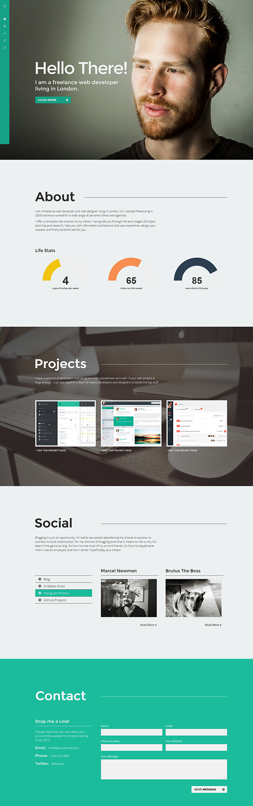
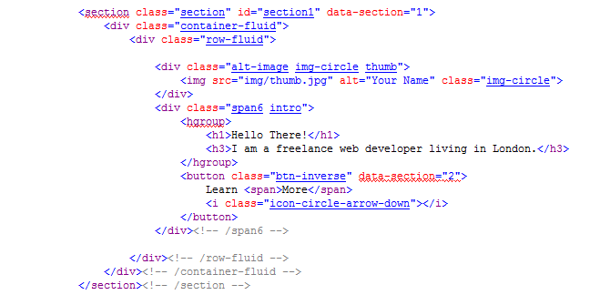
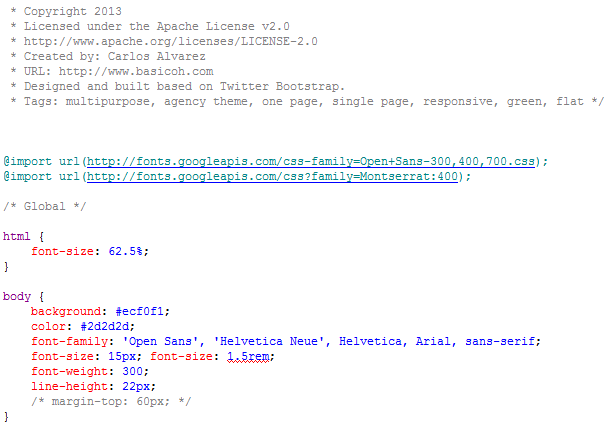
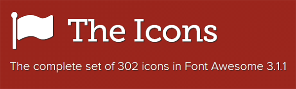
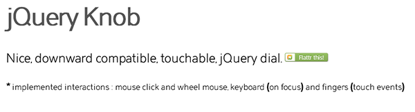
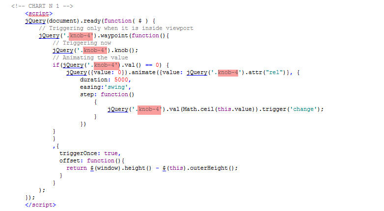

“Flat & Scroll - Multipurpose One Page Theme” Documentation by “Basicoh” v1.0
Created: 03/03/2013
By: Basicoh.com
Email: hola@basicoh.com
Thank you for purchasing my theme. I am very glad that you like it. If you have any questions that are beyond the scope of this help file, please feel free to contact me. Thanks!
Table of Contents
- HTML Structure
- CSS Files and Structure
- Theme Configurations
- JavaScript
- PSD Files
- Sources and Credits

A) HTML Structure - top
This is a quick guide to use and understand the theme. The template is really simple to modify so I am sure you won't have any problems. If you have questions, please feel free to contact me.
The theme is a responsive layout. Was designed using Twitter Bootstrap 2.3.2. Was tested in the major browsers and some devices like iPhone 4s & iPad Retina.
All files on the theme are commented and are really easy to configure. Take a look to the HTML structure:

This theme comes with only one html. The idea is that you can make some changes and launch your site as soon as possible. As I said before, is really easy to modify the theme.
HTML List
B) CSS Files and Structure - top
The theme uses 4 global CSS files. Another css file is added by Google Fonts when the page loads.
This theme was created using Twitter Bootstrap 2.3.2 version. I tried to keep all major configurations by default. The style.css file adds the main configuration and some tweaks in the navigation bar and in the Media Queries.
Please note, the theme works fine on Internet Explorer but wasn't tasted in depth. If you find some problems, please contact me via email and I will try to help you.
CSS List
C) Theme Configuration - top
GOOGLE FONTS
Flat & Scroll uses two predefined Google Fonts, "Open Sans" and "Montserrat". If you want to change this value, you have to replace all the references in the style.css file.
In Google Fonts website you can find the code to paste in the theme. Choose the desired font, click in the "Quick Use" link and copy & paste the code.

FONT AWESOME
The theme uses the Font Awesome fonts to add icons. Font Awesome gives you scalable vector icons that can instantly be customized — size, color, drop shadow, and anything that can be done with the power of CSS.
If you need examples of usage or more information about the script, please visit This Page.
JQUERY KNOB
Knob is a simple script to create donut charts. In the "freelance" version of this theme, this script is used in the "About" section.
To use the script, just locate the code shown below in your html. Change the highlighted value with your desired name.
To call your script, just use the code below.
input data-readonly="true" data-fgcolor="#f1c40f" data-inputColor="#333" data-width="245" data-height="122.5" class="knob-4" rel="4" value="0" readonly="readonly" data-angleArc="180" data-angleOffset="-90" data-max="10"
Please note, that here you have to change the "class=knob-4" with the proper name, the "rel=4" with your desired value and the "data-max=10" with your desired chart max value.
You can obtain more information and detailed configuration here: Knob JQuery
D) JavaScripts - top
List of Javascript files.
- jQuery Framework
- bootstrap.min.js (Default bootstrap javascript)
- jquery.knob.js (Knob chart script)
- jquery.easing.js (advanced easing options)
- modernizr.js (html and css boost)
- waypoints.min.js (scroll script)
- main.js (Theme configurations)
E) PSD Files - top
Please note: This theme NOT includes a full layered PSD.
The theme comes with the demo images, so you can easily modify them with your content.
F) Sources and Credits - top
IMAGE SOURCES
Once again, thank you so much for purchasing this theme. As I said at the beginning, I'd be glad to help you if you have any questions relating to this theme.
Basicoh.com